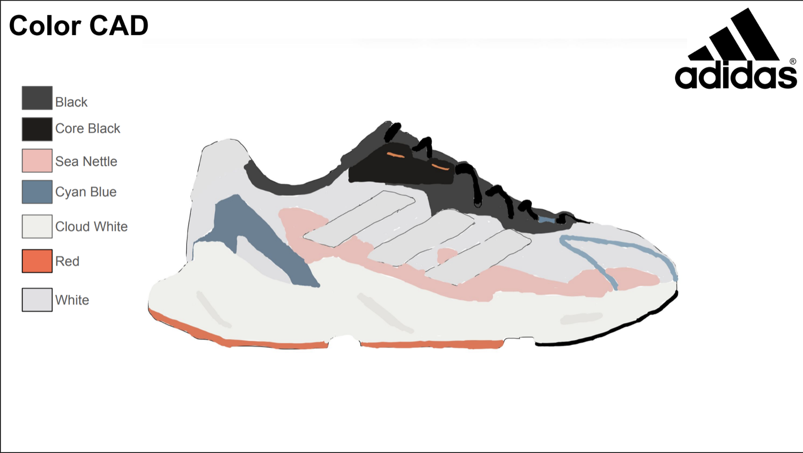
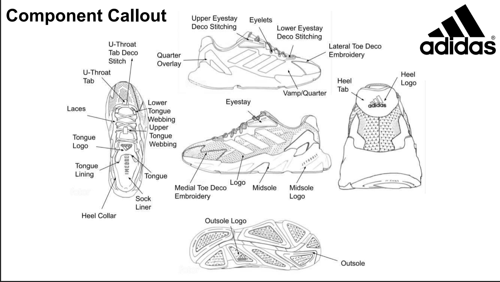
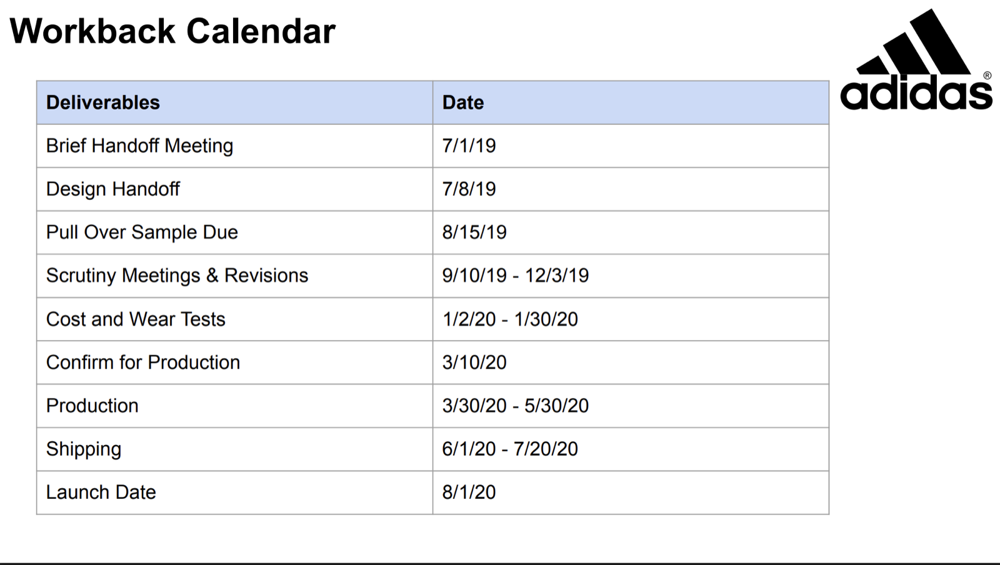

Footwear Development Course — Tech Pack
Completed FASH 912, a footwear product development course taught by industry veteran Elizabeth Brock-Jones, covering the path from design board to factory floor. For the final assignment, I built a complete reverse tech pack of the adidas X9000L4 running shoe.
The Course
FASH 912 (Footwear Product Development, Lasell University) walks through the full 18-month product creation calendar: lasts, shell patterns, tooling, tech packs, BOM creation, costing, wear testing, commercialization, and factory communication.
The Tech Pack
Working from a finished shoe, I reconstructed the tech pack a factory would need to build it: a design brief and mock factory summary email, color/component/material/construction callout CADs, tooling drawing, shell pattern and teardown, bill of materials, logo spec measurements, a budget breaking a $30 factory cost down to upper, tooling, and labor against the $150 retail price, and a seven-week, twelve-pair wear test plan across street, trail, treadmill, and court use.


